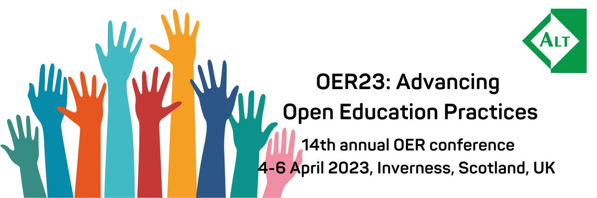
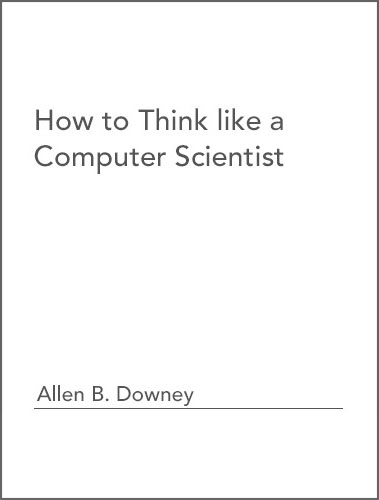
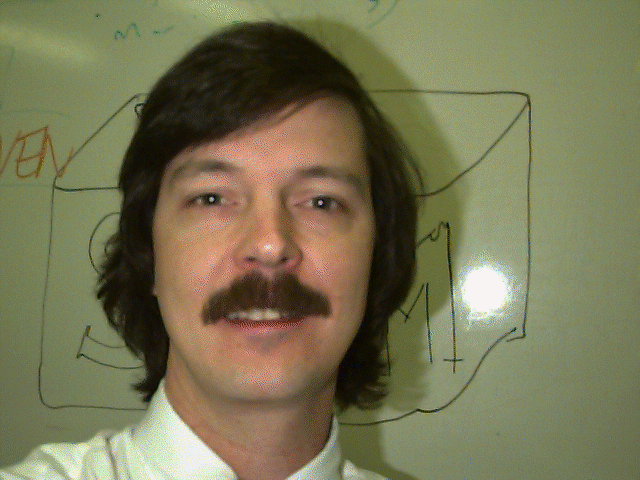
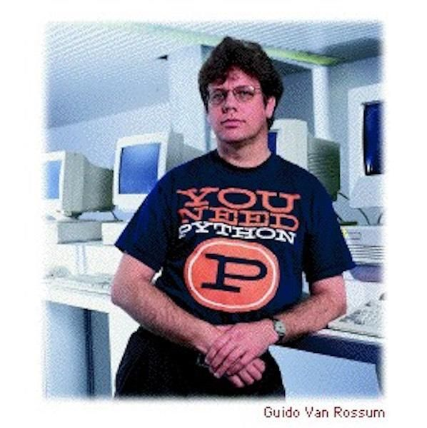
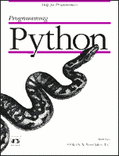
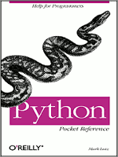
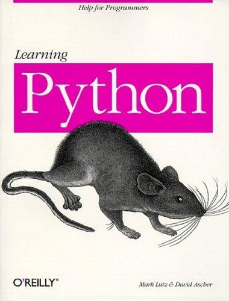
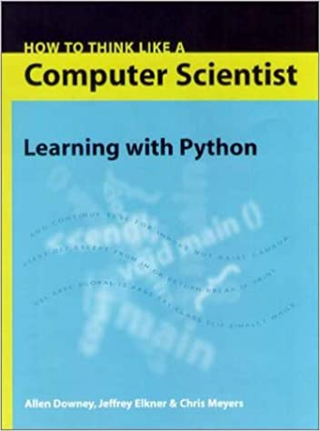

The Strange, Wonderful History of How to Think Like a Computer Scientist
An OER Fairy Tale
April 5, 2023 | Jeffrey Elkner

In 1999 Allen B. Downey wrote How to Think Like a Computer Scientist
- An introductory computer science textbook
- Using Java
- Released under GPL license
Prof. Downey's stated design goals for the book:
- Keep it short. Better for students to read 10 pages than not read 50.
- Be careful with vocabulary. Minimize jargon and define each term at first use.
- Build gradually. To avoid trap doors, take most difficult topics and split them into series of small steps.
- Focus on programming, not the programming language. Include minimum useful subset of Java and leave the rest out.

Meanwhile, down in Arlington, Virginia, I was...
- teaching high school CS for Arlington Public Schools.
- a free software activist since discovering the GPL in 1993.
- teaching in a GNU/Linux lab with control over my software environment.
- desperately looking for a new programming language for our intro course.
Why was I looking for a new programming language?
- AP Comp Sci exam switching from Pascal to C++ in 1999.
- Pascal was a good choice for a first programming language.
- C++ is a bad choice for a first programming language.
Why Python?
 In some respects, the rise of Python is as surreal and surprising as the British comedy group it was named after, and in its own niche the coding language has become just as famous and influential.
-- Nick Heath, August 6, 2019
Programmers love Python because...
- it is easy to write, and easy to read (it fits your brain).
- it has libraries available for almost any programming task you can think of.
- it helps make programming fun!
I chose Python because...
- Michael McLay told me I should at a Linux install fest in 1995.
- free software community folks on the web said I should in 1999.
- student Matt Ahrens tested it out for me as a senior project and told me he accomplished more in 3 months with Python than he could have with C++ in 2 years.
- I was amazed at how well it "fit my brain" - programs often ran the first time without errors, and the language seemed to consitently work the way I thought it did.
   + 
Decision to use Python made, what do I do now?
- The few existing Python books were about the language, not programming.
- I didn't feel able to write my own book.
- That's when Richard Stallman emailed me about Allen Downey's How to Think Like a Computer Scientist.
- While I couldn't write my own book, thanks to the GPL, I could turn his wonderful Java book into a Python book ... So I did.
- And thus I became (until someone comes forward to contradict me) the first high school programming teacher to use Python in their classroom.
An Open Educational Resources Fairy Tale
By making HTTLCS OER before that was even a thing, Allen Downey changed lots of lives for the better, including his own.
- This pioneering example of OER, launched three years before the term open educational resources was coined at UNESCO's 2002 Forum on Open Courseware (Wikipedia 2022), led to numerous remixes, both into other programming languages and other natural languages, and continues to generate remixes twenty-four years later.
- The majority of the remixes use Python as the programming language, and indeed the use of the book grew along with the increasing popularity of Python as the programming language of choice for teaching introductory programming, allowing How to Think Like a Computer Scientist: Learning with Python to play an active part in the growth of Python in CS education.
- Dr. Downey has published over a dozen books, including Think Python, the current update of HTTLCS, Think Stats, Think Bayes, Think Complexity, Elements of Data Science and Think DSP, each of which use Python as a tool for teaching topics in computer science, information science and mathematics, and each of which are available as OER.
A Special Shout Out to Dr. Chuck!
Dr. Charles Severance's video series make accessable, high quality resources for beginners learning Python, Django, and other web technologies available for Everybody.
- Python for Everybody (accompanying book derived from HTTLCSpy)
- Django for Everybody
- Web Applications for Everybody
- Postgres for Everybody
Closing Thoughts: Before I retire ...
- I hope to develop integrated, completely OER resources for the full Associate Degree in Computer Science program offered through Northern Virginia Community College:
- I'd like to use web application development as a project focus and do combined projects with students in our web development course to make this a "for everybody" program.
- Thanks to Allen Downey and Charles Severance, I already have much of what I need.
- Ironically, I am returning to C++, the language from which I fled back in 1999, for two of the courses. I'm working on an updated remix of How to Think Like a Computer Scientist: Learning with C++ in time for next Fall.